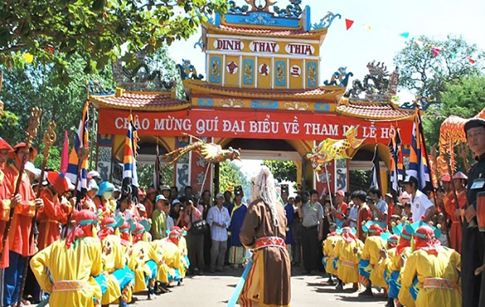
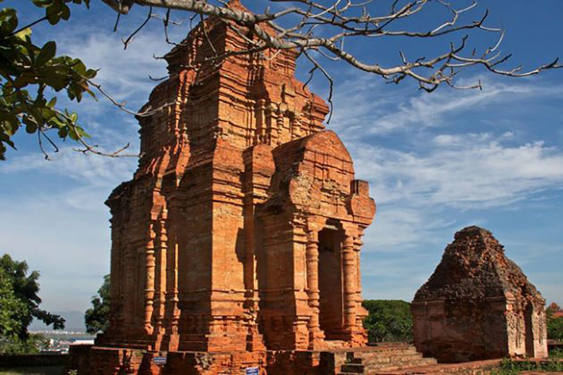
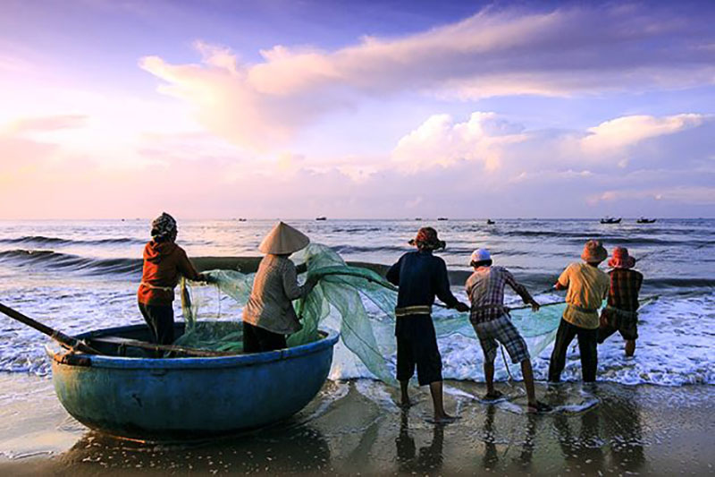

Phan Thiết là một vùng đất có rất nhiều phong tục của các dân tộc và các lễ hội đa dạng rất đặc sắc. Đây cũng chính là điểm mạnh để du khách trong và ngoài nước đến với Bình Thuận và tìm hiểu về một số lễ hội chính ở Phan Thiết.
Dường như tên gọi “Phan Thiết” đều dấy lên trong lòng mỗi người sự tò mò về ý nghĩa sâu xa của nó. Phan Thiết không phải là một từ thuần việt mà bắt nguồn từ tên gọi cũ của người Chăm nên người ta khó có thể hiểu được mục đích xướng tên của nó. Điều này có thể được lý giải rằng Bình Thuận là một vùng đất thuộc Vương quốc Chămpa cổ, nó đóng vai trò cực kì quan trọng đối với dải đất Việt Nam qua các thời kì lịch sử. Vì lí do này, cái tên Phan Thiết vốn được đặt tên theo phong cách của người Chăm, tạo nên “Tam Phan“: Phan Rang, Phan Rí, Phan Thiết như ngày nay. Đến đây du khách có thể tự do khám phá tất cả đặc trưng nổi tiếng nhất đậm chất văn hóa Phan Thiết. Bạn sẽ thấy sự kết hợp đầy quyền lực như được hội tụ tại đây có sức hút một cách lạ lùng, trong đó có thể kể đến đặc trưng về lễ hội-kiến trúc-con người vùng đất Phan Thiết.
Những nét đặc sắc và độc đáo của văn hóa Phan Thiết được thể hiện thực rõ ràng thông qua các lễ hội đặc biệt, đậm màu sắc dân tộc. Đây chính là điểm mạnh của Phan Thiết khi thu hút hàng triệu khách du lịch trong và ngoài nước mỗi năm. Những người đến thăm nơi đây đều có cái nhìn tích cực và khẳng định rằng họ sẽ có mặt tại đây nhiều hơn để cảm nhận vẻ đẹp cũng như phong tục nơi đây. Nếu bạn thực sự tin tưởng văn hóa Phan Thiết sẽ đem đến cho bạn cảm nhận thú vị thì hãy đừng bỏ lỡ lễ hội ở Phan Thiết khi đến du lịch Bình Thuận nhé. Một số lễ hội nổi tiếng được tổ chức tại Phan Thiết: Lễ hội Dinh Thầy Thím, Lễ hội Ka Tê, lễ hội thả diều, Lễ hội Trung Thu.
Thường được tổ chức vào hai ngày 15 và 16 tháng 9 âm lịch tại đền Dinh Thầy, Hàm Tân. Đây là một lễ hội dân gian mang đậm nét truyền thống văn hóa của người Việt, chắc hẳn nền văn hóa Phan Thiết thú vị nơi đây sẽ khiến bạn tò mò. Tên gọi của lễ hội này được bắt nguồn từ tên của hai thầy thuốc Thầy và Thím. Theo truyền thuyết, họ dành cả cuộc đời chuyên chữa bệnh cho nhân dân trong vùng bằng pháp thuật, đến khi qua đời người dân lập đền thờ tại đây để tưởng nhớ công ơn của họ.
Đi du lịch Phan Thiết, du khách hoàn toàn có cơ hội trải nghiệm nghi lễ dân gian truyền thống như lễ nghinh thần, rước sắc phong, phát lộc, v.v. nơi đây cũng được công nhận di tích lịch sử tầm vóc quốc tế. Ngoài ra, có thể kể đến một số hoạt động sôi nổi thể hiện sự năng động và trẻ trung trong văn hóa Phan Thiết như diễn xướng tích thầy, chèo bả trạo, biểu diễn võ thuật, múa lân, phóng sinh thả chim về rừng, v.v. Lễ hội Dinh Thầy Thím kết hợp với khung cảnh thiên nhiên hữu tình thơ mộng ngày càng chứng tỏ vị thế của mình trong lòng du khách trong nước và quốc tế.
Lễ hội Trung Thu mặc nhiên đã tôn lên nét tươi trẻ, nét đẹp riêng cho thành phố Phan Thiết. Chắc hẳn rằng nhiều du khách đến đây thực sự đã có cảm tình và không thể quên được những ấn tượng đọng lại từ nơi đây. Lễ hội Trung thu được tổ chức hàng năm vào đêm 14/8 Âm lịch ở thành phố Phan Thiết. Vào ngày này, cả thành phố Phan Thiết dường như khoác lên một tấm áo mới với đủ loại đèn lồng, cờ hoa treo trên khắp các con phố, ngõ hẻm báo hiệu cho một ngày lễ lớn sắp bắt đầu. Thời gian tháng 8 tháng 9 là thời điểm của sự rộn ràng, vui tươi, mùa của lễ hội do đó du khách sẽ được đắm chìm trong không khí sôi động, hoành tráng với ánh sáng lung linh rực rỡ của đèn hoa muôn màu muôn vẻ được các em thiếu niên diễu hành trong đêm Trung thu trên các đường phố trung tâm, khung cảnh này thể hiện nét văn hóa đặc sắc và dấu ấn thiêng liêng đối với mỗi người dù người lớn hay nhỏ, bởi ai cũng đã trải qua quãng thời gian thơ ấu với những kỷ niệm đẹp.
Theo thông lệ từ hàng trăm năm trước, cứ 2 năm đáo lệ một lần, lễ hội Nghinh Ông có quy mô lớn, lại diễn ra tại Thành phố Phan Thiết do cộng đồng Người Hoa ở đây tổ chức. Đây là lễ hội truyền thống tiêu biểu cho phong tục tập quán và tín ngưỡng của Người Hoa ở Phan thiết, với ước mong cầu cho quốc thái dân an, mưa thuận gió hòa cho một cuộc sống thanh bình, mọi người trong xã hội được ấm no hạnh phúc. Lễ Hội Nghinh Ông là Lễ hội văn hoá truyền thống đặc sắc của Bình Thuận. Lễ Hội Nghinh Ông năm 2008 được UBND thành phố Phan Thiết phối hợp với Ban Quản lý Quan Đế Miếu tổ chức có quy mô lớn nhằm bảo tồn và phát triển văn hoá dân gian truyền thống của cộng đồng người Hoa tại Phan Thiết đồng thời phục vụ phát triển du lịch của Bình Thuận.
Đến với Phan Thiết du khách sẽ mỉm cười hạnh phúc trước nét đẹp văn hóa của những công trình kiến trúc đồ sộ nơi đây. Điều đặc biệt là các công trình quan trọng của thành phố đều được xây dựng ở hai bên bờ sông Cà Ty. Điều này có thể lý giải vì bên cạnh những tòa tháp cao sừng sững kia, khung cảnh non nước hữu tình hiện ra, tất cả tạo nên một bức tranh đẹp và cân xứng chưa từng thấy. “Miền đất hứa” Phan Thiết ẩn chứa biết bao điều bí ẩn, hấp dẫn luôn chào mời du khách mọi miền ghé thăm.
Một cái tên nghe thật độc đáo mới lạ, tháp Chàm là một điểm đến không nên bỏ qua trong các tour du lịch Mũi Né – Phan Thiết. Tháp Chàm Poshanư cũng là một trong những khu di tích đặc biệt nhất còn sót lại của người Chăm cổ xưa tại Việt Nam. Tòa tháp được xây dựng để thờ cúng thần Shiva – vị thần thiêng liêng được sùng bái và tôn kính nhất của Hindu giáo.
Ngoài ra, ngọn tháp này còn gắn bó với câu chuyện tình yêu trắc trở và ly kỳ của công chúa Poshanư và chàng Po Sahaniempar. Tình yêu của họ không đơm hoa kết trái, vì thế công chúa Poshanư đã lựa chọn cuộc sống an nhàn tại Bianneh, hướng dẫn nhân dân khai rẫy, trồng bông dệt vải, các quy tắc ứng xử, giao tiếp tiến bộ. Để tôn vinh người phụ nữ có công ơn này, người Chăm đã tạc tượng Bà và thờ trong tháp.
Khu di tích Trường Dục Thanh là nơi Bác Hồ dạy học, trước khi Người lên đường bôn ba tìm đường cứu nước. Giờ đây, công trình kiến trúc ở Phan Thiết này vẫn mang nét đẹp đặc biệt vì trường đã được trùng tu và phục chế hoàn hảo, địa điểm này được Nhà nước xếp hạng Di tích lịch sử – văn hóa quốc gia. Hiện, khu di tích này gồm các công trình chính: Gian nhà phía trước là nơi diễn ra quá trình dạy và học của Trường Dục Thanh trước đây; bên phải là gian nhà Ngự – khu nội trú của học sinh; dãy nhà phía sau là Ngọa Du Sào – nơi Bác Hồ nghỉ ngơi và đọc sách, soạn giáo án và khu vườn cây trái, giếng nước, v.v. Khu Di tích Dục Thanh ngày nay trở thành nơi tham quan, nghiên cứu của nhiều đoàn khách trong và ngoài nước.
Ở bất kì nơi đâu, con người luôn được ví như hồn cốt, là nhân tố quyết định nền văn hóa riêng biệt của từng vùng miền. Đến thăm miền đất hứa Phan Thiết, du khách sẽ ngạc nhiên không chỉ bởi lối sống mà còn ấn tượng bởi tính cách của người dân nơi đây.
Ấn tượng đầu tiên trong mắt du khách có lẽ là sự dễ gần của người Phan Thiết, họ luôn thể hiện sự tôn trọng đối với người nước ngoài, dành cho những vị khách một sự đón tiếp ân cần như người thân trong gia đình. Sự mến khách của họ dường như diễn tả sự tự hào vô tận đối với mảnh đất đầy tiềm năng mà thiên nhiên ban tặng. Du khách đến thăm Phan Thiết sẽ cảm thấy hài lòng về thái độ phục vụ vô cùng chu đáo của những con người hồn hậu này. Không cần phải vào những resort hạng sang tại Mũi Né, bạn có thể đến bất kì đâu và cuộc nói chuyện với những người dân địa phương tốt bụng cũng đủ khiến bạn nhớ mãi không quên.
